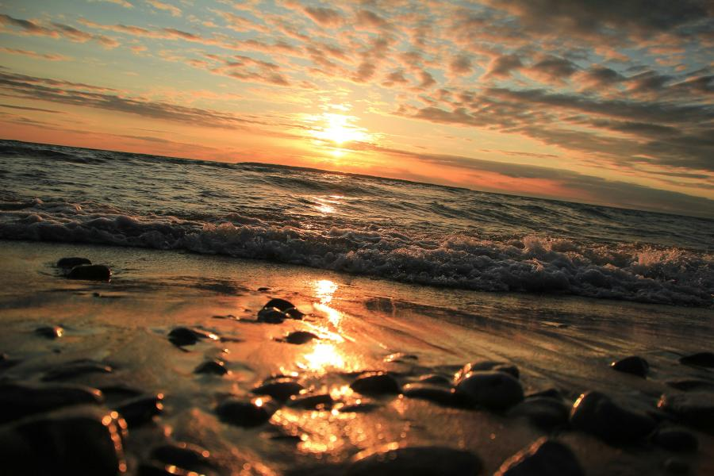

Imageomics Institute's Anuj Karpatne, a professor at Virginia Polytechnic Institute and State University, is among the first-round National AI Research Resources (NAIRR) Pilot award winners, earning an invitation to speak at the White House Office of Science and Technology Policy (OSTP) on May 6.
With support from the National Science Foundation and access to Computing at Oak Ridge National Laboratory, Karpatne and his team are building LakeGPT a foundation model to forecast the quality of water in lakes across the US using principles of knowledge-guided machine learning (KGML).
He said the effort is in collaboration with the eco-KGML team of Arka Daw, Abhilash Neon, Sepideh Fatemi, Cayelan Carey, Mary Lofton, Paul Hanson, Bennett McAfee, and Robert Ludwig.
According to Science, Karpatne hopes the NAIRR grant will accelerate progress on Lake-GPT. Unlike traditional models, which are based on detailed monitoring of one or two lakes and apply only to those settings, Lake-GPT aims to predict the fate of water quality in thousands of lakes across the country. The model is being trained on the vast amounts of environmental data collected by projects such as the NSF-funded National Ecological Observatory Network (NEON).
That training will require lots of computing time, so Karpatne asked for 12 million GPU hours on any available machine. (Graphical processing units, or GPUs, are the computer chips favored in most AI work.) He wound up with less than 10% of that amount, some 750,000 GPU hours, on Summit. That’s enough to do forecasts of 20 lakes over the next 6 months, he says—and obtain results that he hopes will earn him additional computer time in subsequent rounds.
Read more in this recent article published by Science.org.